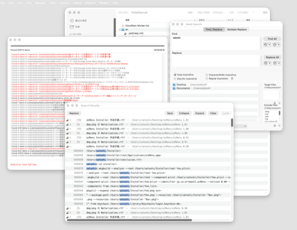
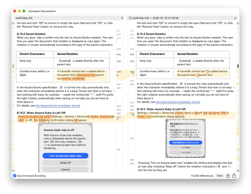
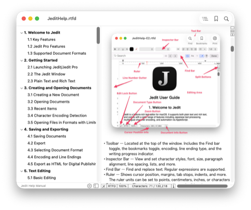
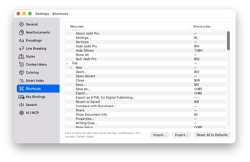

Overview
Jedit Pro is a text editor for macOS. It is the upgraded edition of the free Jedit, adding the advanced editing features inherited from the legacy Jedit Ω, and is built for people who work with long manuscripts and large numbers of files, or who deal with Japanese typesetting and text processing every day.
It renders Aozora-style ruby and emphasis dots directly in the editor, searches and replaces across multiple folders, compares documents side by side, exports HTML for digital publishing, and includes an MCP server for AI client integration.
The app itself is a free download from the Mac App Store, and all features are free to try for 7 days from first launch. To continue, users choose a yearly subscription of JPY 3,000 or a lifetime license of JPY 5,000.
Fact Sheet
| Product name | Jedit Pro |
|---|---|
| Category | Text editor for macOS |
| Version | 1.0 |
| Release date | July 29, 2026 |
| Requirements | macOS 15.6 or later (Apple Silicon / Intel) |
| Price | Free download with a 7-day free trial. To continue: yearly subscription JPY 3,000, or lifetime license JPY 5,000 (covers version 1.x) |
| Distribution | Mac App Store |
| App Store (US) | apps.apple.com/us/app/jedit-pro/id6764817834 |
| App Store (Japan) | apps.apple.com/jp/app/jedit-pro/id6764817834 |
| Languages | Japanese, English |
| Supported formats | Plain text, RTF, RTFD, Microsoft Word (.doc / .docx), Markdown (.md), text clippings |
| License | Terms of Use (EULA) |
| Publisher | Artman21 Inc. (合資会社アートマン弐壱) |
| Developer | Satoshi Matsumoto (representative, Artman21 Inc.) |
| Bundle ID | jp.co.artman21.Jedit-Pro |
| Official site | cometheart314.github.io/Jedit-Pro-docs/en/ |
| Jedit (free) | cometheart314.github.io/Jedit-open/en/ |
| Contact | Artman21 User Support support@artman21.co.jp |
Pro-only Key Features
Aozora ruby and emphasis dots
Annotations such as ｜漢字《かんじ》 are rendered as actual ruby text, in both vertical and horizontal writing, in the editor, in print, and in HTML export. Nine styles of emphasis dots are supported.

Multi-file find & replace
Search across multiple folders, jump to any hit from the results panel, and replace in batch. Multiple find/replace pairs can be applied at once.

Document comparison
Two documents side by side with color-coded differences. Comparison against a saved version is supported, and double-clicking a difference jumps to that place in the document.

Smart Index
An outline of headings is generated automatically in the sidebar. Extraction rules are customizable, and entries can be imported into bookmarks.

Syntax coloring
Keyword coloring for programming and markup languages, with user-defined definitions in addition to the built-in ones.

Customizable key bindings
Menu keyboard shortcuts and text-editing key actions can be changed freely, including Emacs-style key bindings.

AI client integration (MCP)
AI clients such as Claude Desktop can read and edit open documents. The connection is restricted to loopback on the same Mac and requires an access token.
HTML export for digital publishing
Documents containing ruby and emphasis dots are exported as HTML suitable for use as EPUB source.
Tools menu
Hard line wrapping, sorting, Unicode normalization, half/full-width conversion, duplicate line handling, kanji radical detection and conversion, encoding compatibility checks, and more.
Everything in the free Jedit — vertical and horizontal writing, page layout view, character encoding support with auto-detection, rich text, Word and Markdown, iCloud sync, AppleScript, and printing — is also available in Jedit Pro.
Relationship to Jedit Ω and the free Jedit
Jedit Ω was loved by many users as a powerful text editor for the Mac, but its codebase had grown old and could no longer keep up with newer versions of macOS, so sales and support ended at the end of November 2025. The new Jedit and Jedit Pro are successor editors rewritten from scratch, with AI (Claude Code) adopted across the entire development process, using Jedit Ω as a reference.
The free Jedit, released in April 2026, was deliberately narrowed to the features everyone needs daily, and a number of Jedit Ω features were not reimplemented. Jedit Pro is the upgraded edition that provides them.
Jedit Ω features provided by Jedit Pro
- Multi-file find / replace
- Document file comparison
- Various Jedit Ω Tools menu features
- Encoding compatibility checks
- Syntax coloring
- Smart Index
- Menu shortcut customization
- Key-binding customization
New features that Jedit Ω never had
- Aozora-style ruby and emphasis dots (in the editor, in print, and on export)
- HTML export for digital publishing
- High-quality read aloud via Google Cloud Text-to-Speech
- A built-in MCP server for AI clients
Pricing
The app itself is a free download, and all Pro features are free to try for 7 days from first launch. No payment is required during the trial, and no cancellation is needed.
- Yearly Subscription — JPY 3,000 per year, automatically renewing
- Lifetime License — JPY 5,000, one-time payment, no renewal (covers version 1.x)
All purchases are processed by Apple through the App Store. See the Terms of Use for details.
Privacy
Jedit Pro stores document contents, search strings, and all settings on the user's own Mac and sends nothing off the device. Even with AI client integration enabled, communication is confined to a loopback connection on the same Mac.
Details: Privacy Policy
Press Materials
The materials below may be used freely in articles, reviews, and features about Jedit Pro. Please avoid modifying the images where possible.

Terms of Use for These Materials
The app icon and screenshots included in this press kit may be used for the purpose of reporting on, reviewing, or introducing Jedit Pro. Jedit, Jedit Pro, and Jedit Ω are trademarks or registered trademarks of Satoshi Matsumoto.
For the terms that apply to using the app itself, see the Terms of Use.
Contact
For press inquiries or requests for additional materials, please contact us below.
Artman21 User Support
Email: support@artman21.co.jp